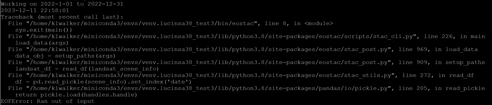
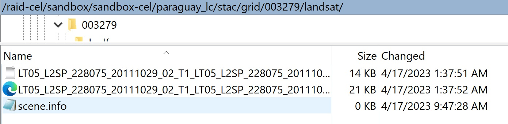
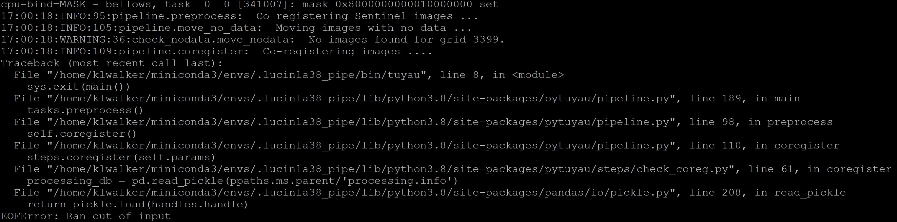
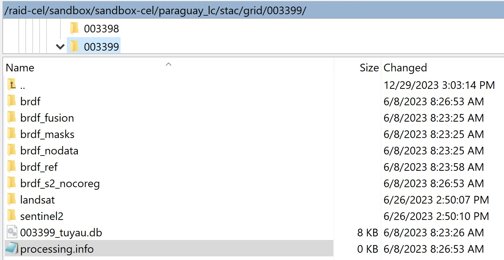
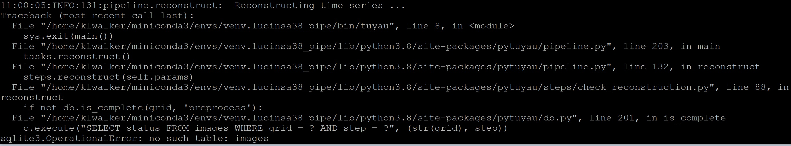
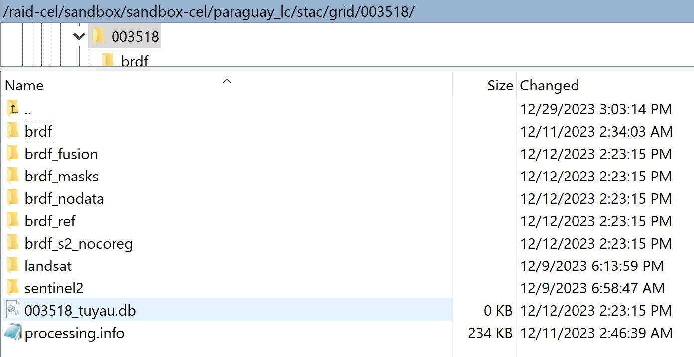

troubleshooting errors¶
download errors¶
brdf errors¶
out of input error¶

This means that the scene.info file is corrupted, in either the landsat or sentinel download file (indicated in the error script)
if you locate the scene.info file, you will probably see that it has zero bytes.

To get around this error, simply delete the corrupted scene.info file and rerun the download script. This will create a new scene.info file and will not redownload files that already exist.
coreg errors¶
out of input error¶

In this case, the database 'processing.info' is corrupted.
if you locate the 'processing.info' file, you will probably see that it has zero bytes.

To fix this error, delete the corrupted 'processing.info' file. If brdfs have already been run, the best way to build processing.info database is to run the reconstruct_db (or Notebook 0) from LucinSA_helpers. A simpler (but less robust) method is to rerun the download script and the database should be recreated from the existing downloads (this does not work if downloads have already been cleaned).
ts errors¶
no such table error¶
 This means that the tuyau.db file either does not exist or is corrupted. First make sure that you entered the intended cell number when running (including the 1,000 place – it is easy to accidentally run 4923 instead of 3929, for example). Next, make sure that coreg has been run. Lastly, make sure the tuyau.db file exists and has data (if it exists, but has no data, rerunning coreg should repopulate it) 
bad object header error¶
This means that at least one brdf file is corrupted. This often happens if errors are not caught at the download stage and are run through brdf. Note the year for which the error applies and clean all download and brdf files for that year using eostac_clean_removeFromDB.sh or tuyau_clean (see cleaning_files). Then rerun download, brdf, and coreg for that year and retry the ts.